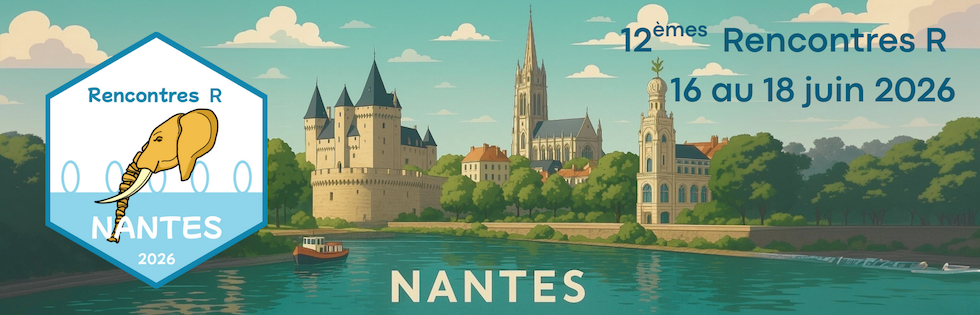
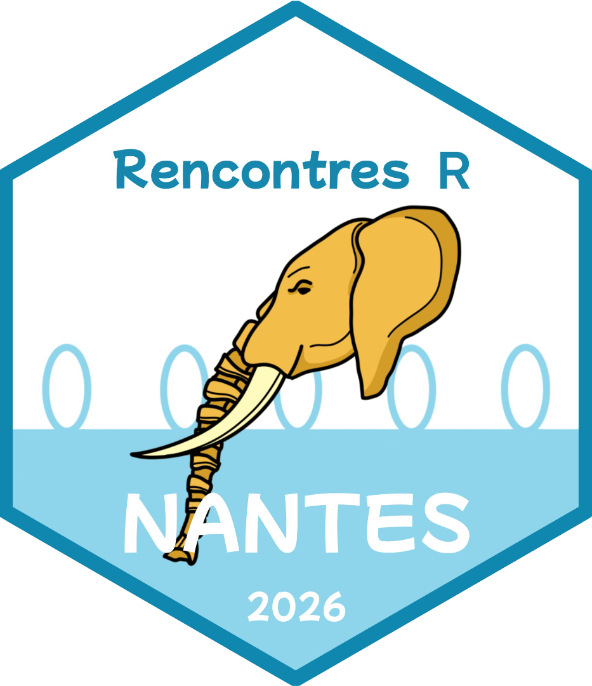

| auteurrices | titre | mots_cles |
|---|---|---|
| Arthur Coulon, Lise Bellanger, Philippe Husi | SPARTAAS : quand les données mobilières archéologiques rencontrent R | package R, archéologie, analyse factorielle, classification, régression, visualisation |
| Imène Bouafia, Anne Philippe, Guillaume Guerin | Modélisation bayésienne sous contraintes d'ordre partiel pour la géochronologie | Optimisation Isotonique, DAG, Inférence Bayésienne, Archéologie |
| Christophe Regouby | Les nouveautés de l'écosystème {torch} | Apprentissage profond, Torch, IA, Package |
| Jonathan Kitt, Cécile Huneau, Pauline Lasserre-Zuber, Pierre Marin, Hélène Rimbert | Les ateliers codons : pratiquer, progresser, échanger | formation, communauté, équiper, progresser |
| Arianna Burzacchi, Aymeric Stamm | fdasynthesis: Génération de données synthétiques pour l'analyse de données fonctionnelles | Génération de données synthétiques, Analyse de données fonctionelles, Square Root Velocity Functions, fdasynthesis |
| Vincent Guyader | Votre DSI a coupé internet : quelle solution pour héberger les packages R en interne ? | packages, CRAN, Docker, entreprise, reproductibilité |
| Solène Le Manach, Maxime Legris, Alisson Baron, Terence Dechaux, Clotilde Hardy | surveyR un package pour les graphiques d'enquête | Statistique, Enquête, Package |
| Charles Bordet | Shiny — Passer du prototype à l'industrialisation | Shiny, Production, Bonnes Pratiques, Industrialisation |
| Arthur Bréant | Pierrot se fait hacker — Sécuriser son application Shiny | shiny, sécurité |
| Fabien Taghon | COST4Rail : Développer un outil d'aide à la décision ferroviaire avec R et Shiny | Ferroviaire, Shiny, Simulation, Machine learning, Incertitudes |
| Raphael Simon, Meriem Said, Vincent Biot, Nathalie Rigollot | Au-delà du code : Accompagner les équipes dans la transition vers l'open source | r, migration, public |
| Marc Laurencelle, Théophile Lohier, El Mamoun Squalli, Violaine Bault | MATUREAU : du code monolithique au package pour un clustering sur mesure applicable aux séries temporelles hydrogéologiques | Statistique, Hydrogéologie, Package, Maturation, Refactoring |
| Vincent Guyader, Matthieu De Canteloube | 50 milliards d'euros, une deadline, zéro régression : migrer un service de calcul critique vers R avec l'IA | migration, IA générative, non, régression, legacy |
| Hugues Pecout, Matthieu Viry, Timothée Giraud | mapsf.gui : une interface graphique pour la cartographie thématique | Cartographie, Géospatial, Shiny, Package, GUI |
| Louis Laurian, Timothée Giraud | Utiliser OpenStreetMap et son écosystème avec R | Cartographie, Package, OpenStreetMap, Géocodage, Données spatiales |
| Marie Vaugoyeau | Comment choisir les couleurs d'un graphique {ggplot2} ? | Statistique, Datavisualisation, Couleurs, Graphique, {ggplot2} |
| David Gohel | Enrichir les annotations ggplot2 avec le package 'munch' | ggplot2, dataviz, graphiques, markdown |
| Joseph Barbier | Ce qui rend R unique : 5 fonctionnalités qui séduisent un développeur Python | S3, Métaprogrammation, Lazy Evaluation, Syntaxe |
| Elise Maigné, Jean-François Rey, Olivier Delaigue, Jean-Christophe Helbling, François Tilmant, Cédric Midoux, Maxime Lenormand | Création d'un réseau SHINY::ESR | Shiny, Animation, Réseau, Ingénierie, Valorisation |
| Nelly Le Guen | Automatisation en R de la recherche et de la structuration de codes (CIM-10, CCAM, ATC) à partir de sources externes | Automatisation – Dictionnaire des codes – Sécurisation – Optimisation des traitements |
| David Carayon | Du terrain au tableau de bord : l'écosystème {shinyODK} | ODK, RShiny, PostgreSQL |
| Xavier Delpuech, Hervé Maire, Chazalmartin Anne-Sophie | startbox : un package R pour l'analyse et la visualisation des données d'expérimentation en protection de la vigne | Statistique, Protection des plantes, Data, ontologie, Package R |
| Lise Vaudor, Samuel Dunesme, Fanny Arnaud | Montrer ses muscles en tant que collectif de recherche avec HALtere | Shiny, HAL, bibliométrie, réseau, analyse textuelle |
| Mahendra Mariadassou, Cédric Midoux, Olivier Rué | AffiliationExplorer: une application shiny pour résoudre les conflits de taxonomie | Biostatistique, Package, Shiny, Taxonomie, Métabarcoding |
| Emile Mardoc, Maxence Klock, Xavier Raffoux, Julie Aubert, Christelle Hennequet-Antier, Marie Courbariaux, Mathilde Sola, Emmanuelle Le Chatelier, Nicolas Maziers, Florence Thirion, Florian Plaza Oñate, Giacomo Vitali, Lindsay Goulet, Mahendra Mariadassou, Mathieu Almeida, Magali Berland | Comment le prétraitement des données façonne les conclusions en métagénomique ? Un benchmark reproductible pour guider l'analyse du microbiome | Benchmark, Microbiome intestinal, Métagénomique shotgun, Science reproductible, Prétraitements des données |
| Philippe Grosjean, Guyliann Engels | svTidy et le « formula-masking » : une alternative intéressante à {dplyr} et {tidyr} pour remanier vos jeux de données | Manipulation de données, SciViews, svTidy, formula, masking, Tidyverse |
| Alli Cozic-Sova, Olivier Crouzet | Analyse descriptive et prospective de l'empreinte environnementale d'une Unité Mixte de Recherche : Présentation d'une démarche en cours. | Empreinte environnementale, Unité Mixte de Recherche, Planification, Données Ouvertes |
| Alexis Van Straaten | scanR : Détection d'objets avec YOLO | Package, Computer Vision, Fine, tuning, IA |
| Marion Brandolini-Bunlon, Élise Maigné, Sébastien Theil, Isabelle Sanchez, Virginie Rossard, Eric Latrille, Gwendal Cueff, Marie Tremblay-Franco, Nadia Bessoltane, Caroline Peltier, Alyssa Imbert | The R4multidata project: comparison of multidimensional data analysis R tools. Example with RGCCA and mixOmics for supervised methods | multidimensional data analysis, R software, comparison |
| Patrice Kiener | Les lois de probabilité à queues épaisses et asymétriques dans le package FatTailsR | Lois de probabilité, Queues épaisses, Skewness, Kurtosis, Séries boursières |
| Sébastien Boutry, David Carayon | ShinyQSort : Une application Shiny pour l'implémentation de la méthode du Q-sorting | Qmethod, Shiny, Qsorting |
| Pierre Santagostini, Nizar Bouhlel | Distribution du rapport de deux variables gaussiennes corrélées ou indépendantes | Ratio de gaussiennes, Estimation, Imagerie de fluorescence de chlorophylle, Epidémiologie végétale, Package |
| Joe De Keizer, Matthieu Trotreau, Denis Frasca, Yohann Foucher | G-computation for estimating marginal effects: an R package for randomized clinical trials | Causal inference, G, computation, Machine learning, Randomized clinical trial, Power |
| Albert Rilliard, Simon Devauchelle, Lucas Ondel Yang, David Doukhan, Nicolas Denier | Une bibliothèque Julia pour des modèles de régression bayésiens : comparaison avec les pratiques liées à R | Régression bayésienne, modélisation statistique, phonétique acoustique, diachronie, Julia |
| Gabrielle Devaux, Paul Poncet | Déployer des modèles R dans Databricks (presque) sans douleur | Ingénieure, Data, Package, Industrialisation, Databricks |
| Lino Galiana | R est-il un langage adapté à la production ? | Production, Data, Reproductibilité |
| Arthur Bréant | Pierrot et le web : quand Shiny ne suffit plus | shiny, htmx, plumber2 |
| Morgane Giladi, Barbara Caucheteux | Enseigner R aux professionnels de la santé en formation continue : un dispositif de classe inversée contextualisé à l'analyse des données de santé | Enseignement, Données de santé, Formation continue, Classe inversée, E, learning |
| Nicolas Audibert | Applications Shiny pour l'exploration visuelle interactive des données et l'enseignement des statistiques en SHS | Statistique, Data, Enseignement, Shiny |
| Guyliann Engels, Philippe Grosjean | Utilisation de tutoriels learnrs pour évaluer des étudiants en science des données biologiques | Enseignement, Évaluation continue, learnr, learnitr |
| Mohamed El Fodil Ihaddaden | De la création à la gestion des agents d'IA : principes et mise en œuvre avec mini007 | AI, package, workflow |
| Remi Mahmoud, Sébastien Lê | TrustMe: Taking a Critical Approach to LLM-Generated Interpretations of Statistical Analyses. | Statistique, IA, Package, Enseignement, LLM |
| Alisson Baron, Uranie Jean-Louis | CluZzy : enquête aux frontières du flou | Data, Package, Enseignement |
| Yseulys Dubuy, Safae El Berkani, Etienne Dantan | FLASH : comprendre la FLuctuation d'échAntillonnage avec R SHiny | Mots, clefs (3 à 5) : Statistique – Biostatistique – Enseignement – Shiny – Fluctuation |
| Swann Flochlay | Les frictions de la cohabitation R-Excel | Shiny, Parquet, Accessibilité, Collectivité, REX |
| Tanguy Barthelemy | {IssueTrackeR} : Traiter les tickets en R | Package, GitHub, Gestion de tickets, API GitHub |
| Antoine Girard | Vis ma vie d'aRtisan | analyse de données, artisanat, dataviz |
| Vincent Brault | SD Monster : un outil pédagogique pour la ressource d'apprentissage statitistique pour l'IA | Enseignement, IA, Apprentissage par renforcement, Théorie des jeux |
| Christophe Dervieux | Enrichir les capacités de Quarto avec les filtres Lua | Quarto, Développement, Reproductibilité, Lua, Filtres, Automatisation |
| Juliette Engelaere-Lefebvre, Edouard Morin | Bye bye googlesheet ! Vive Grist, le tableur collaboratif souverain | Googlesheet, Database, Package, API, Grist |
| Christophe Regouby | R et l'Accessibilité : Vos productions accessibles par la pratique | Accessibilité, Graphique, Package, Bonnes Pratiques |
| Amina Belkebir-Mekki, Yohann Foucher, Camille Sabathe | survivalSL: an R Package for Predicting Survival by a Super Learner | Survival, Machine Learning, Ensemble Learning, Super Learner, Prediction, Censored outcomes, Loss functions |
| Dicko Ahmadou | {samplyr} : une grammaire tidy pour exprimer les plans de sondage en R | Sondages, Échantillonnage, Tidyverse, Enseignement, Reproductibilité |
| Juliette Engelaere-Lefebvre | CatalogueR les données d'un serveur PostgreSQL/Postgis sans (trop d') effort | Package, DataOps, Reproductibilité, Shiny, Institution publique |
| Maxime Jaunatre, Matthias Grenié | {rtaxrefdb} : que faire quand mon API préférée a été cyberattaquée ? | Package, API, SQL, Taxonomie, Ecologie, Ingénieur |
| Julie Aubert, Nathalie Vialaneix | Créer et maintenir une CRAN Task View (CTV) : retour d'expérience sur la création de la CTV Omics | Package, Ecosystème R, Contribution, Omiques |
| Joseph Barbier | R et Rust : une histoire d'amour naissante | Rust, outils modernes, productivité, data science |
| Antoine Fabri | Débogage explosif avec boomer | Package, Debugging, Enseignement, Programmation Meta |
| Imène Lazizi, Catherine Auger, Lionel Lafay, Claire Morgand | Une application R Shiny pour le droit à l'oubli après un cancer | cancer, épidémiologie, data, Shiny, survie |
| Daniels Eli | Riskintro : risque d'introduction des maladies vétérinaires | Épidémiologie, Géospatiale, Packages, Shiny |
| Marie Chion | ANNULE - Tutoriel 1 - Comprendre et traiter les valeurs manquantes dans R | NA |
| Christophe Dervieux & Maëlle Salmon | Tutoriel 2 - PDF sans frictions : Typst dans vos projets Quarto | NA |
| Sébastien Lê | Tutoriel 3 - Introduction au tAIdyverse : l'analyse de données à l'R de l'intelligence artificielle | NA |
| Sébastien Plutniak | Plénière - disciplinR : modalités d'intervention intra-disciplinaires avec R. Réflexions depuis l'écosystème archeofrag pour l'analyse spatiale des fragmentations archéologiques | NA |
| Anne Philippe | R et archéologie | NA |
| Amandine Schmutz | Présentations courtes | NA |
| Cédric Midoux | Shiny | NA |
| Dan Chaltiel | Transition vers l’open source | NA |
| Lise Vaudor | Cartographie | NA |
| MAGMAA : 15 Rue La Noue Bras de Fer, 44200 Nantes | Ice Breaker | NA |
| Cara Thompson | Plénière - Bien plus qu'un beau graphique: créativité et accessibilité avec {ggplot2} | NA |
| Emmanuelle Mauger | Visualisation | NA |
| Romain Lesur | Production | NA |
| Mahendra Mariadassou | Enseignement | NA |
| Emilie Devijver | Plénière - Abstraction de graphes causaux | NA |
| Julien Chiquet | LLM | NA |
| Aurelie Siberchicot | Présentations courtes | NA |
| David Carayon | Reporting | NA |
| Rémi Peyre | Statistique et apprentissage | NA |
| Jean-François Rey | Bases de données | NA |
| Les Brassés : 5 Mail Pablo Picasso, 44000 Nantes. | Gala | NA |
| Maëlle Salmon | Plénière - Plongée dans l’écosystème R | NA |
| Antoine Bichat | Écosystème R | NA |
| Alain Danet | Plénière - Décrypter le rôle de la biodiversité pour le fonctionnement des écosystèmes: complémentarité, redondance, et les outils R pour une écologie reproductible | NA |
| Julie Aubert | Shiny pour la santé | NA |


Les 12e Rencontres R ont eu lieu à Nantes, du 16 au 18 juin 2026 (site web).
Conférenciers invités et conférencières invitées
Sébastien Plutniak : disciplinR : modalités d’intervention intra-disciplinaires avec R. Réflexions depuis l’écosystème archeofrag pour l’analyse spatiale des fragmentations archéologiques (résumé)
Cara Thompson : Bien plus qu’un beau graphique: créativité et accessibilité avec {ggplot2} (résumé)
Emilie Devijver : Abstraction de graphes causaux (résumé)
Maëlle Salmon : Plongée dans l’écosystème R (résumé)
Alain Danet : Décrypter le rôle de la biodiversité pour le fonctionnement des écosystèmes: complémentarité, redondance, et les outils R pour une écologie reproductible (résumé)
Tutoriels
Christophe Dervieux & Maëlle Salmon : PDF sans frictions : Typst dans vos projets Quarto
Sébastien Lê : Introduction au tAIdyverse : l’analyse de données à l’R de l’intelligence artificielle
Marie Chion Comprendre et traiter les valeurs manquantes dans R -Reporté-